Solver benchmarks
Work-precision benchmarks of OrdinaryDiffEq solvers on the exact problems each model uses to reproduce its paper's figures. Error is the dense L2 error against a reference solution at tolerance 1e-12; time is the median of 5 solves. Solvers that cannot solve a problem within 100,000 steps at the loosest tolerance, or that need more than 5 s for that one solve, are listed as failed or too slow. Run with julia --project=benchmarks/solvers benchmarks/solvers/run.jl or with the Benchmarks workflow on GitHub Actions (one job per model, results as artifacts).
Run on GitHub Actions (ubuntu-latest, 1 thread per solve), Benchmarks workflow runs 41825447617 and 41832132513, 2026-11-04.
| model | problem | reference | fastest to relative dense L2 error <= 1e-6 | time [ms] | solvers that failed or were too slow |
|---|---|---|---|---|---|
| ouerdani_2015 | mouse typical, Figure 4 left | Vern9 | Vern7 | 0.062 | |
| ouerdani_2015 | patient typical, Figure 4 right | Vern9 | Vern7 | 0.065 | |
| hutchinson_2016 | fig2a control | Vern9 | Tsit5 | 0.074 | |
| hutchinson_2016 | fig2e Nmax=21 window | Vern9 | Tsit5 | 0.210 | |
| hutchinson_2016 | fig6c chemo in window | Vern9 | BS3 | 0.352 | |
| hutchinson_2016 | fig6d chemo 38-59 | Vern9 | BS3 | 0.999 | |
| lindauer_2017 | lindauer_2017 human base, 5.0 mg/kg Q3W, 26 weeks | Rodas5P | QNDF | 3.998 | Tsit5, Vern7, BS3 |
| lindauer_2017 | lindauer_2017 human base, 0.5 mg/kg Q3W, 26 weeks | Rodas5P | FBDF | 3.118 | Tsit5, Vern7, BS3 |
| fornari_2019 | fornari_2019 rat, carboplatin 40 mg/kg x8 q14d (Fig 3) | Vern9 | Tsit5 | 2.607 | |
| fornari_2019 | fornari_2019 human, two 21-day cycles, Table 2 slopes (Fig 4b) | reference solve failed | |||
| stroh_2019 | monkey3mgkgM1S1 | Rodas5P | QNDF | 2.232 | Tsit5, Vern7, BS3 |
| stroh_2019 | human4.5mgkg1000x | Rodas5P | QNDF | 1.848 | Tsit5, Vern7, BS3 |
| stein_2019 | typical patient, Figure 3a right grid | Vern9 | Vern7 | 0.124 |
fornari 2019: fornari 2019 rat: carboplatin 40 mg kg x8 q14d: Fig 3
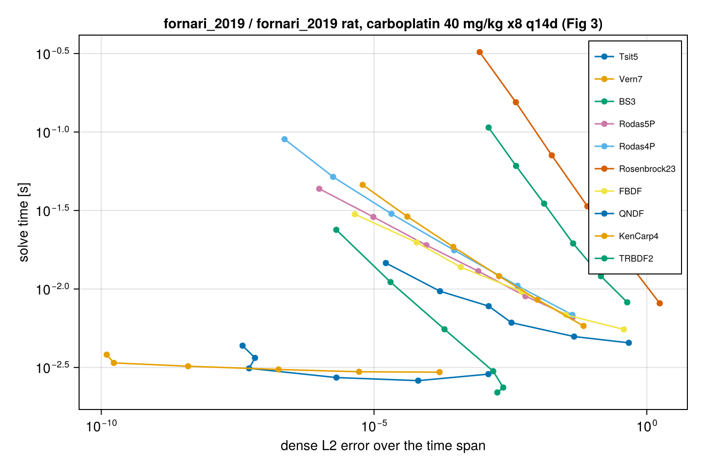
hutchinson 2016: fig2a control
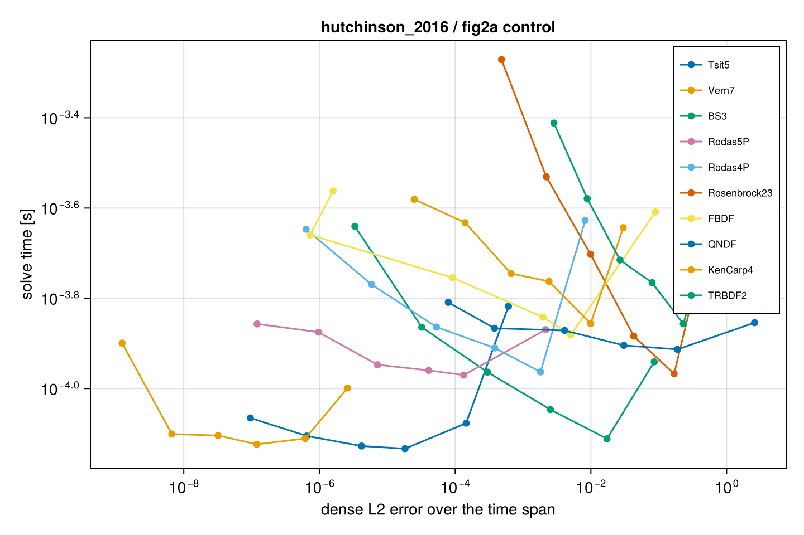
hutchinson 2016: fig2e Nmax 21 window
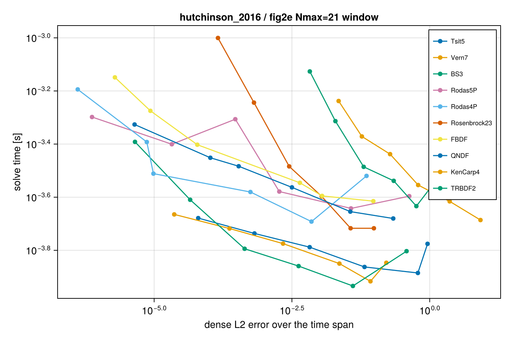
hutchinson 2016: fig6c chemo in window
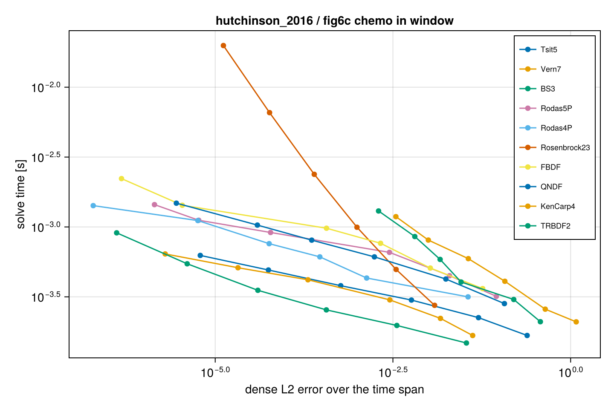
hutchinson 2016: fig6d chemo 38 59
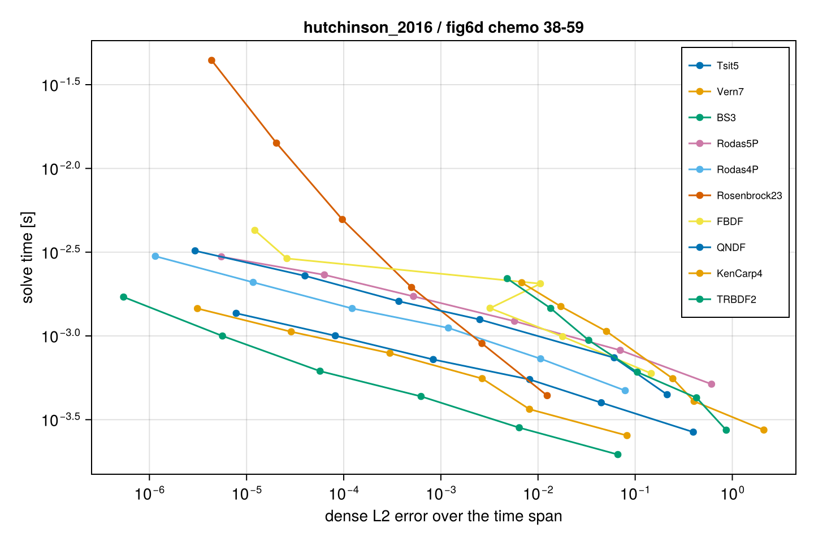
lindauer 2017: lindauer 2017 human base: 0 5 mg kg Q3W: 26 weeks
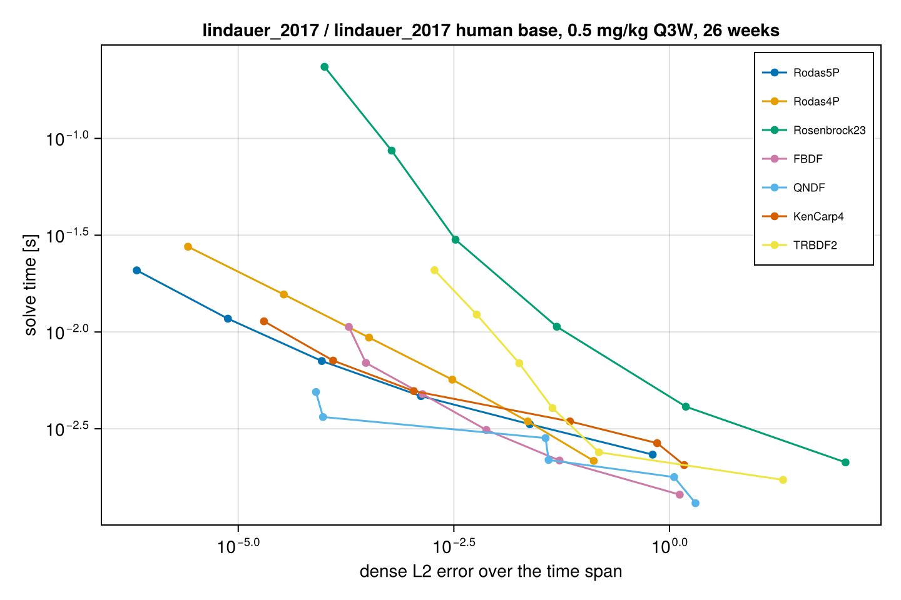
lindauer 2017: lindauer 2017 human base: 5 0 mg kg Q3W: 26 weeks
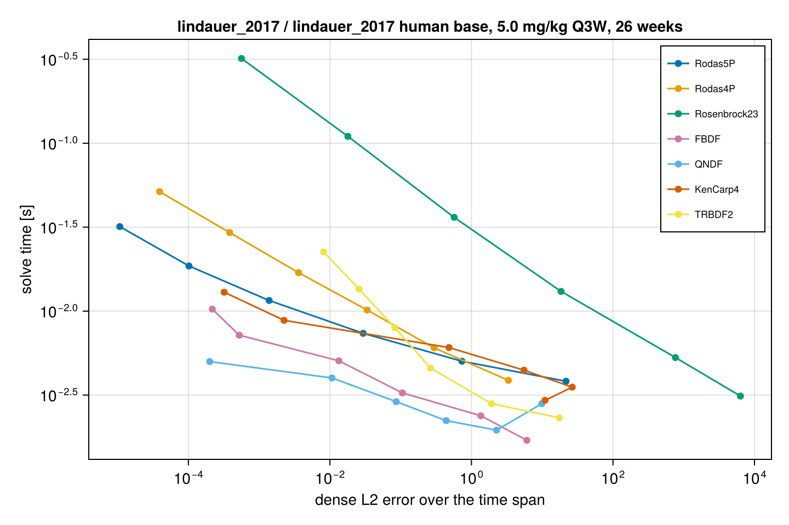
ouerdani 2015: mouse typical: Figure 4 left
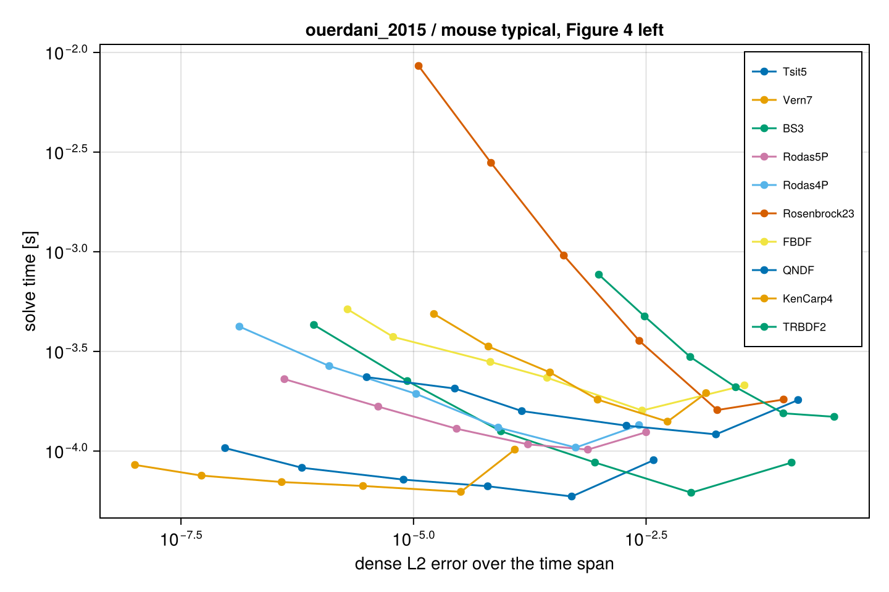
ouerdani 2015: patient typical: Figure 4 right
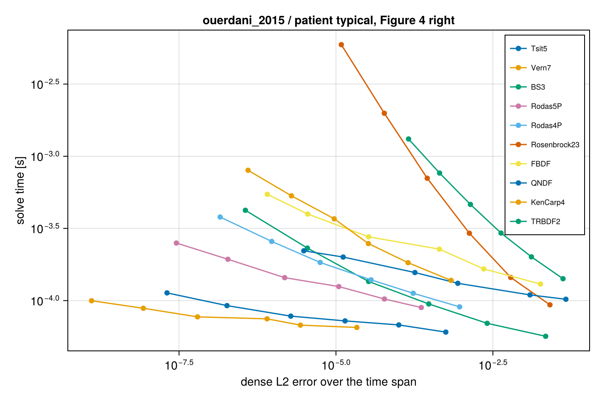
stein 2019: typical patient: Figure 3a right grid
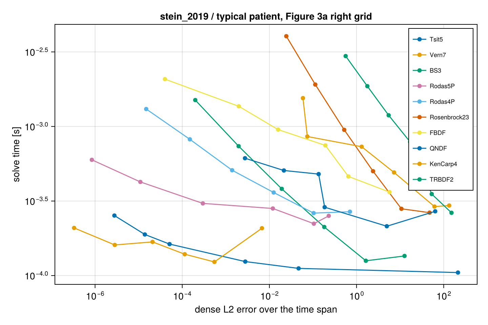
stroh 2019: human 4 5mgkg 1000x
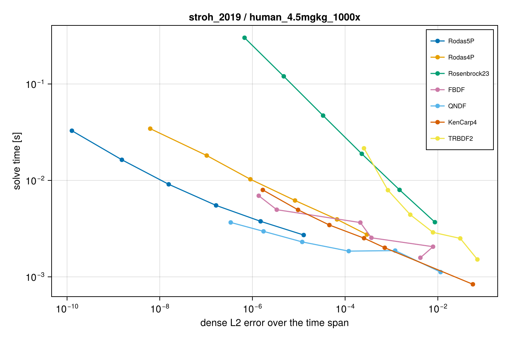
stroh 2019: monkey 3mgkg M1S1
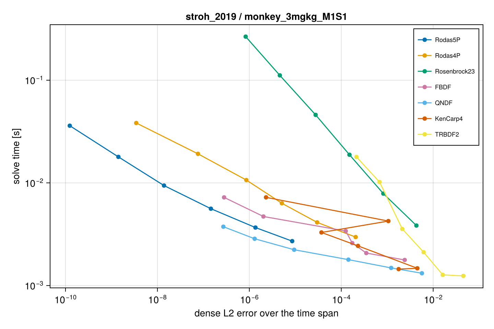